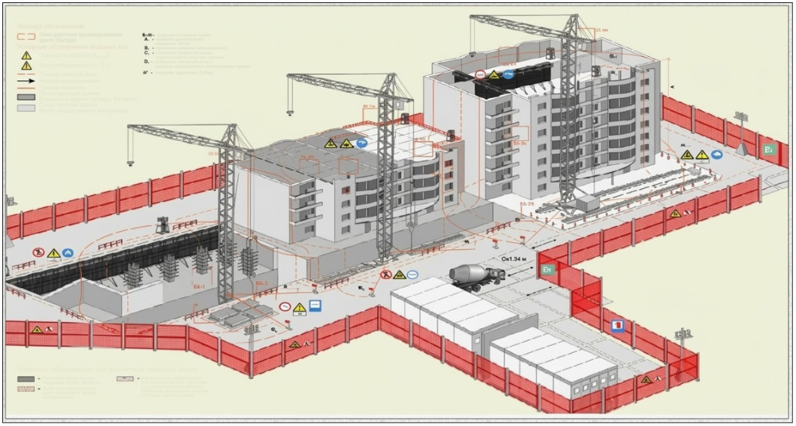
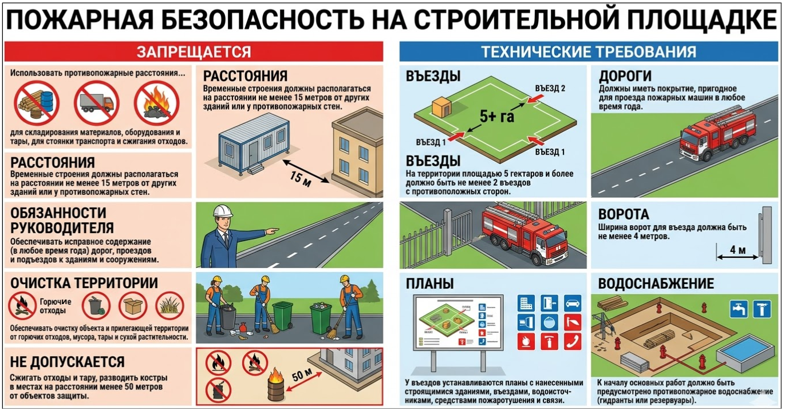
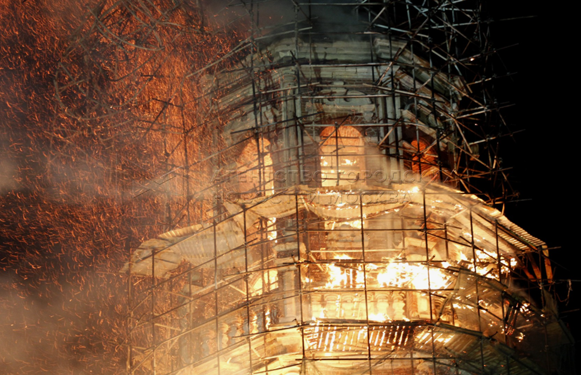
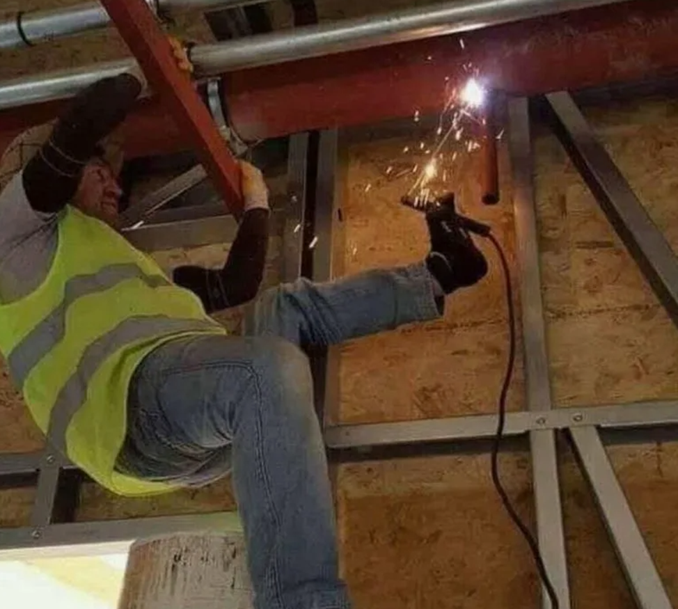
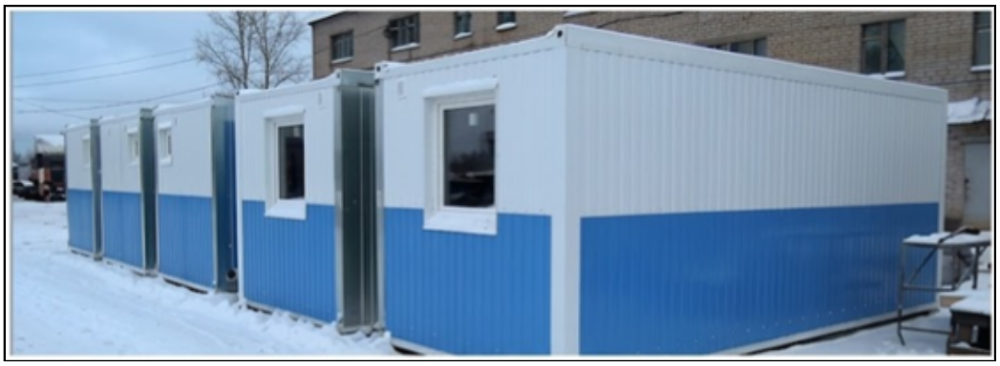
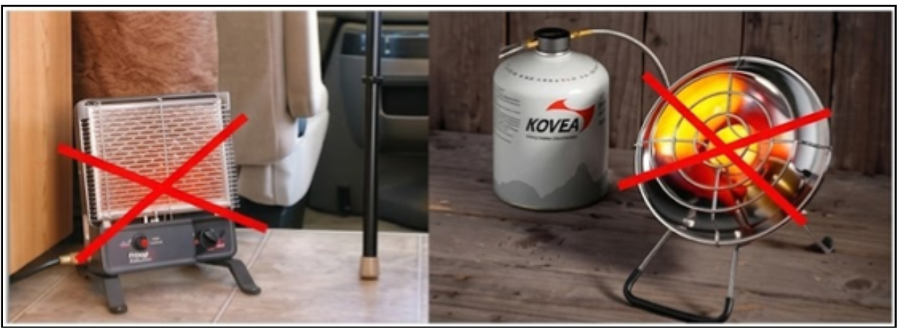

Как организовать стройплощадку по требованиям ПБ
Здравствуйте и добро пожаловать на обучение по программе "Обеспечение пожарной безопасности в строительстве"! Меня зовут Станислав Рассказов. Я эксперт по пожарной безопасности с 15-летним опытом и технический директор ГК «Пожарный регистр». В этом курсе мы не будем просто зазубривать статьи. Моя цель — научить вас оценивать объект глазами эксперта. Эти навыки необходимы каждому инженерно-техническому работнику, чтобы не только грамотно вести исполнительную документацию, но и защитить себя от юридических рисков и предписаний.

Начнем с самого важного — с того, кто отвечает за пожарную безопасность на объекте и как правильно организовать строительную площадку.
Кто отвечает за пожарную безопасность
Многие ИТР ошибочно полагают, что за пожарную безопасность отвечает исключительно директор. На практике закон распределяет ответственность шире. Под удар попадают собственники имущества и должностные лица в пределах их компетенции. Но самое важное для вас: ответственность несут лица, назначенные ответственными за ПБ по приказу.
Ваша работа опирается на «трех китов»:
- Федеральные законы: основной закон о пожарной безопасности ФЗ № 69 и технические регламенты — ФЗ № 123 и ФЗ № 384.
- Правила противопожарного режима: основной документ, определяющий, как эксплуатировать объект и проводить работы — ПП РФ № 1479.
- Своды правил (СП): технические нормы, по которым проектируются системы и пути эвакуации.
Игнорирование этих документов ведет к юридической ответственности. Помимо административных штрафов, есть и уголовная ответственность. Например, если нарушение правил привело к гибели людей, наказание может составить до 7 лет лишения свободы лично для того, кто был обязан эти правила соблюдать.
Как организовать площадку
Безопасность объекта закладывается в стройгенплане . Этот план — ваш главный документ: он гарантирует, что на площадке соблюдены противопожарные разрывы и нормы размещения объектов.
Вот так выглядит пример стройгенплана.

Обеспечение проезда пожарной техники и водоснабжение
Первое, что должен проверить инженер при организации территории — это доступность объекта для подразделений МЧС.
| Въезды на объект | Минимум два въезда с разных сторон (если площадь стройки от 5 га) |
| Параметры проезда | Ширина ворот — от 4 м. Покрытие должно выдерживать тяжелую технику. |
| Водоснабжение | Гидранты или резервуары должны функционировать до начала работ. |
| Схема въезда | На планах-схемах у въезда должны быть отмечены здания, гидранты и связь. |
Складирование материалов и противопожарные разрывы
Размещение материалов на площадке должно быть строго зонировано. Горючие материалы и грузы в горючей упаковке разрешено хранить на открытых площадках только группами площадью не более 100 квадратных метров. Между такими группами, а также до любых строящихся или существующих зданий, должен быть выдержан противопожарный разрыв не менее 24 метров.
Особое внимание уделяется горючему утеплителю. Его необходимо хранить в отдельно стоящих строениях или на спецплощадках на расстоянии не менее 18 метров от любых других зданий и складов.
Самые важные требования пожарной безопасности на стройплощадке я отразил на схеме ниже. Обязательно скачайте ее из дополнительных материалов к уроку и используйте в дальнейшей работе.

Технологические и режимные ограничения
Внутри строящихся зданий допускается размещать временные мастерские и склады, однако здесь действует ряд жестких запретов. Категорически нельзя складировать горючие вещества, оборудование в горючей упаковке или организовывать производства, связанные с применением горючих материалов. Также запрещено использовать строящиеся объекты для проживания персонала.
Строительные леса и высотные работы
Особое внимание ИТР должен уделять конструкциям лесов и опалубки. Они должны выполняться из материалов, не распространяющих и не поддерживающих горение. На каждые 40 метров периметра здания устанавливается лестница (минимум две на объект). Леса необходимо регулярно очищать от мусора, снега и льда. Категорически запрещено закрывать леса горючими материалами.
Ниже вы можете увидеть, к чему приводит игнорирование этих требований:

Совмещение опасных операций
Одной из частых причин пожаров является одновременное проведение несовместимых работ. Запрещено выполнять внутренние работы с использованием горючих веществ параллельно с операциями, связанными с открытым огнем. Например, электросваркой или резкой металла:

Бытовые условия и обогрев
Организация быта рабочих также регламентирована. Контейнеры для административных и бытовых нужд могут быть 1- или 2-этажными, но в одной группе должно быть не более 10 контейнеров, а общая площадь группы не должна превышать 800 квадратных метров. Использование этих помещений для проживания запрещено. На рисунке ниже изображено правильное расположение блок-контейнеров:

В зонах обогрева и бытовках недопустимо использовать устройства с открытым пламенем, самодельные электронагреватели или инфракрасные газовые горелки. Сушка одежды и обуви должна проводиться только в специально оборудованных помещениях с центральным водяным отоплением.

Практическая часть
Теперь давайте потренируемся. Этот интерактивный тренажер поможет отработать навыки проверки стройгенплана на соответствие нормам безопасности. На схеме есть пять критических нарушений в организации стройплощадки. Ваша задача — внимательно изучить схему и нажать на оранжевые точки там, где есть нарушение.
Экзамен ИТР 2026: Стройгенплан

Источник и ограничения. Для интерактивной проверки требуется доступ к сети; локальное представление сохраняет только перечисленные выше элементы.
Отлично, первый урок позади. Базовые требования безопасности вам понятны, но огонь не всегда предсказуем. Чтобы эффективно управлять рисками на стройплощадке, инженер должен понимать саму природу угрозы. В следующем уроке мы разберем опасные факторы и неочевидные сценарии развития пожара. Эти знания помогут вам вовремя распознать опасность там, где другие ее не заметят.
{kind=link}
{kind=link}
{kind=link}